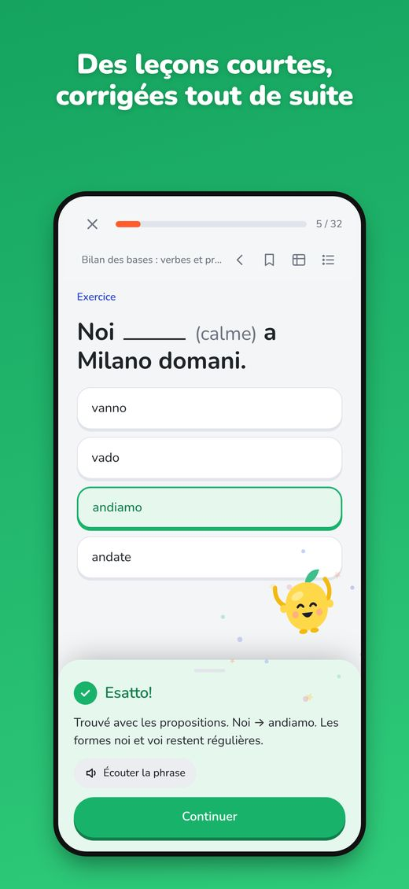

01
Des leçons courtes, corrigées tout de suiteShort lessons, corrected instantlyLecciones cortas, corregidas al instante
Vocabulaire dit par Lino, phrases à trous, traductions : chaque réponse est corrigée à la seconde, avec un indice si tu bloques.Vocabulary spoken by Lino, fill-in-the-blanks, translations: every answer is corrected in a second, with a hint if you get stuck.Vocabulario dicho por Lino, frases para completar, traducciones: cada respuesta se corrige al momento, con una pista si te atascas.